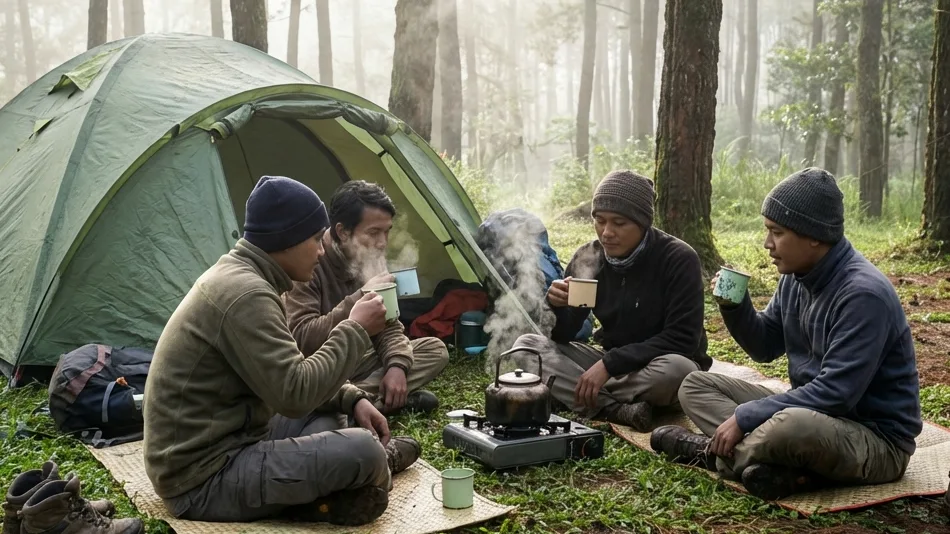

1. Menjauh dari Kemewahan: Panggilan Alam Liar Malang
Di tengah pesatnya perkembangan industri pariwisata yang berlomba-lomba menawarkan kemewahan instan (seperti *glamping* berskala hotel), terdapat segolongan jiwa petualang yang justru merasa terasingkan oleh fasilitas yang berlebihan tersebut. Bagi sebagian orang, tidur di atas kasur *springbed* yang diletakkan di tengah hutan justru merusak esensi dari sebuah petualangan. Mereka mendambakan sentuhan yang lebih nyata dengan tanah, suara angin yang menyapu dedaunan tanpa terhalang tembok kayu, dan kepuasan menyeduh kopi dari kompor lapangan (portable) yang menyala redup.
Jika Anda adalah seseorang yang sedang merasakan panggilan jiwa tersebut, maka pencarian mengenai Jelajah Alam Lewat Camping Malang: Sensasi Bermalam Otentik dengan Tenda Dome adalah peta navigasi yang sangat tepat. Wilayah Malang Raya, khususnya di dataran tinggi Kota Batu, menyimpan ratusan hektar ruang hijau yang menanti untuk dijelajahi. Melalui panduan komprehensif ini, kita akan membedah mengapa menginap di dalam tenda dome klasik tetap menjadi pilihan terbaik untuk merestorasi jiwa, keunggulan teknis dari tenda jenis ini untuk melawan cuaca dingin Malang, hingga persiapan logistik apa saja yang wajib Anda bawa agar petualangan murni ini tidak berubah menjadi siksaan fisik akibat hipotermia.
2. Mengapa Memilih Camping Malang dengan Tenda Dome?
Di antara banyaknya jenis tenda modern yang bermunculan di pasaran, tenda berbentuk setengah bola (dome tent) tetap menduduki tahta tertinggi di kalangan para pecinta alam sejati. Alasannya lebih dari sekadar bentuk fisiknya.
Keaslian Berbaur dengan Alam (Otentisitas)
Ketika Anda menggunakan tenda dome, Anda benar-benar melepaskan seluruh benteng kemewahan peradaban. Jarak antara Anda dengan rumput yang berembun hanyalah dibatasi oleh selembar kain alas tenda. Anda bisa mendengar dengan teramat jelas simfoni jangkrik, derik ranting pinus yang bergesekan, hingga tetesan air hujan yang memukul kain parasut (flysheet). Sensasi otentik inilah yang membangkitkan insting bertahan hidup manusia dan menyadarkan kita betapa kecilnya eksistensi kita di hadapan kebesaran alam semesta.
Melatih Kemandirian dan Kebersamaan
Aktivitas kemah tradisional memaksa Anda untuk bergerak aktif. Menyusun kerangka fiberglass tenda, memalu pasak (pegs) ke dalam tanah, menarik tali pengikat (guy-lines) agar tenda berdiri kokoh, hingga memasak air menggunakan kompor kecil adalah serangkaian tugas fisik yang sangat memuaskan. Jika dilakukan bersama kawan atau keluarga, tugas-tugas ini secara alami akan melatih kemandirian, kekompakan tim, dan melahirkan cerita lucu yang akan terus dikenang hingga bertahun-tahun lamanya.
BACA JUGA (Edukasi Berkemah):
3. Keunggulan Tenda Dome untuk Camping di Malang
Wilayah pegunungan Malang Raya memiliki karakteristik cuaca yang cukup ganas, terutama saat musim kemarau di mana fenomena angin kencang dan suhu beku (bediding) sering terjadi. Tenda dome adalah senjata paling ampuh untuk menghadapinya.
Desain Aerodinamis Penahan Angin
Desain tenda dome yang melengkung dan membulat bukanlah tanpa alasan. Secara ilmu fisika dan aerodinamika, bentuk melengkung ini berfungsi untuk membelah dan mengalirkan hembusan angin badai dari segala arah tanpa memberikan perlawanan yang frontal. Berbeda dengan tenda berbentuk kotak atau kabin (cabin tent) yang sangat rawan roboh atau patah kerangkanya jika dihantam angin kencang dari arah pegunungan.
Sistem Double Layer Anti Embun
Saat Anda melakukan Jelajah Alam Lewat Camping Malang, Anda wajib menggunakan tenda dome bertipe Double Layer (dua lapis). Lapisan pertama (inner) biasanya terbuat dari kain mesh (jaring) yang memungkinkan Anda bernapas lega tanpa pengap. Sementara lapisan kedua (flysheet) yang berbahan polyester/waterproof PU menutupi seluruh bagian luar. Rongga di antara kedua lapisan ini berfungsi membuang uap hangat dari napas Anda, sehingga uap tersebut tidak berubah menjadi embun (*kondensasi*) yang menetes ke wajah Anda saat sedang tidur terlelap di malam hari.

Memasak secara mandiri menggunakan peralatan nesting dan kompor lapangan memberikan kepuasan batin tersendiri bagi para penikmat aktivitas outdoor yang mencari pengalaman otentik. (Dokumentasi: Batu Sunrise Camp)4. Rekomendasi Spot Camping Malang yang Otentik
Bagi Anda yang mencari lahan kemah yang menyuguhkan nuansa belantara namun masih dalam jangkauan kemanan yang masuk akal, kawasan Batu Malang menyimpan permata tersembunyi yang amat menawan.
Kawasan Hutan Pinus Batu Sunrise Camp
Nama Batu Sunrise Camp seringkali muncul sebagai destinasi favorit bagi para petualang. Meskipun mereka menawarkan konsep Comfort Camping (menyediakan paket tenda sewa All-In yang sudah berdiri), mereka tetap menggunakan tenda tipe dome gunung konvensional yang otentik. Anda bisa menyewa lahan (ground) di bawah kerindangan pohon pinus tropis yang rapat. Di pagi hari, sinar matahari akan menerobos masuk membentuk fenomena Ray of Light yang magis. Yang membedakan tempat ini dengan hutan liar adalah ketersediaan fasilitas penunjang keamanan berupa colokan listrik dan toilet bersih, sehingga cocok bagi *camper* pemula yang ingin belajar mandiri secara bertahap.
Sensasi Puncak Perbukitan Malang Raya
Selain hutan pinus, lahan kemah di perbukitan Malang Raya (seperti lereng Panderman atau kawasan Brakseng) menyajikan tipe vegetasi yang lebih terbuka (sabana). Di area ini, tantangan terbesarnya adalah angin yang jauh lebih kencang, namun kompensasi yang didapat adalah pemandangan city light tanpa halangan serta hamparan lautan bintang (milky way) di langit malam yang bersih. Tenda dome Anda akan benar-benar diuji ketangguhannya di medan terbuka seperti ini.
5. Persiapan Logistik Jelajah Alam Camping Malang
Berkemah otentik berarti Anda harus siap menanggung keselamatan dan kenyamanan fisik Anda secara mandiri. Berikut adalah persiapan vital yang tak boleh dilewatkan.
Pakaian Berlapis (Layering System)
Tinggalkan kemeja katun tipis atau celana bahan jeans Anda di dalam lemari rumah. Saat bermalam di ketinggian Malang, suhu dapat merosot hingga 14 derajat Celcius. Anda wajib mengenakan pakaian dengan prinsip 3-Layering System. Lapisan pertama (base layer) harus terbuat dari bahan *dry-fit* agar keringat mudah menguap. Lapisan kedua (mid layer) gunakanlah jaket fleece (polar) untuk mengunci suhu panas tubuh. Lapisan ketiga (outer layer) kenakanlah jaket parasut tebal atau windbreaker sebagai pelindung dari tusukan angin gunung. Lengkapi juga ekstremitas tubuh dengan kupluk rajut (beanie), sarung tangan kain, dan dua lapis kaus kaki saat tidur.
Peralatan Tidur dan Dapur Lapangan (Nesting)
Tidur beralaskan tanah rumput akan menyerap suhu tubuh Anda dengan sangat cepat. Wajib hukumnya menggelar matras berlapis aluminium foil di lantai tenda, kemudian tumpuk dengan matras spons atau matras tiup (sleeping pad). Masuklah ke dalam kantong tidur (sleeping bag) tipe mummy yang memiliki lapisan polar di bagian dalamnya.
Untuk urusan logistik perut, bawalah kompor gas portabel berbahan bakar gas kaleng mini (hi-cook) yang dilengkapi dengan windshield (penghalang angin alumunium). Gunakan panci susun praktis yang biasa disebut nesting untuk memasak air, menanak nasi, atau menggoreng lauk pauk sederhana yang menghangatkan suasana.
BACA JUGA (Keindahan Alam):
6. Etika Berkemah: Menjaga Kelestarian Alam Malang
Menjadi seorang penjelajah alam sejati (true camper) tidak hanya diukur dari seberapa mahal merek tenda Anda, melainkan seberapa besar adab dan kepedulian Anda terhadap lingkungan yang Anda tinggali sementara waktu.
Terapkan Prinsip Leave No Trace
Prinsip Leave No Trace (Jangan Tinggalkan Jejak Apapun) adalah hukum tertinggi dalam dunia perkemahan. Jangan pernah membiarkan sekecil apa pun bungkus plastik permen, botol minuman, atau sisa makanan berserakan di sekitar tenda Anda. Kumpulkan semuanya ke dalam kantong sampah mandiri (trash bag) dan bawalah turun menuju tong sampah resmi di kawasan parkir pengelola. Meninggalkan sampah tidak hanya mencemari tanah, tetapi juga mengubah perilaku hewan liar pencari makan di hutan.
Menghormati Satwa Liar dan Lingkungan
Anda adalah seorang tamu di rumah milik alam. Hindari menyalakan alat pemutar musik dengan volume yang menggelegar ke seluruh penjuru hutan, karena hal ini dapat mengganggu waktu istirahat tetangga tenda Anda dan membuat stres burung-burung liar di pepohonan. Jika Anda ingin membuat perapian api unggun, buatlah secara bertanggung jawab di area alas bakar yang telah diisolasi dengan batu (fire-pit), bukan membakar rumput hidup secara serampangan yang bisa memicu risiko bencana kebakaran lahan.
7. Kesimpulan
Mengambil keputusan untuk mencoba Jelajah Alam Lewat Camping Malang: Sensasi Bermalam Otentik dengan Tenda Dome adalah sebuah cara paling murni untuk menyatukan kembali raga dan pikiran yang selama ini terkungkung oleh rutinitas perkotaan. Tenda dome klasik tidak hanya bertindak sebagai pelindung aerodinamis yang tangguh terhadap cuaca buruk pegunungan, tetapi juga bertindak sebagai sebuah sarana pembelajaraan kemandirian, kesederhanaan, dan kekompakan tim. Dengan berbekal pengetahuan sistem pakaian berlapis (layering), persiapan logistik tidur yang matang, serta adab pelestarian alam yang luhur, petualangan Anda di kawasan sejuk Batu Malang dipastikan akan menjadi sebuah pengalaman healing fisik dan mental yang tak akan pernah terlupakan sepanjang hayat.